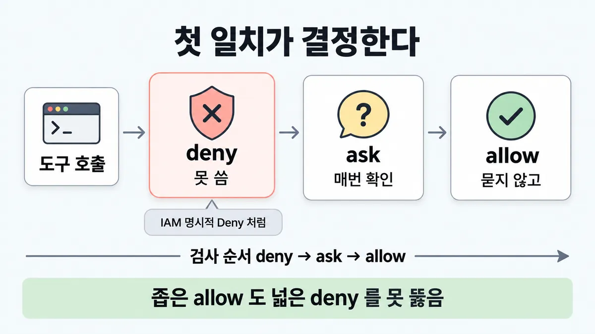
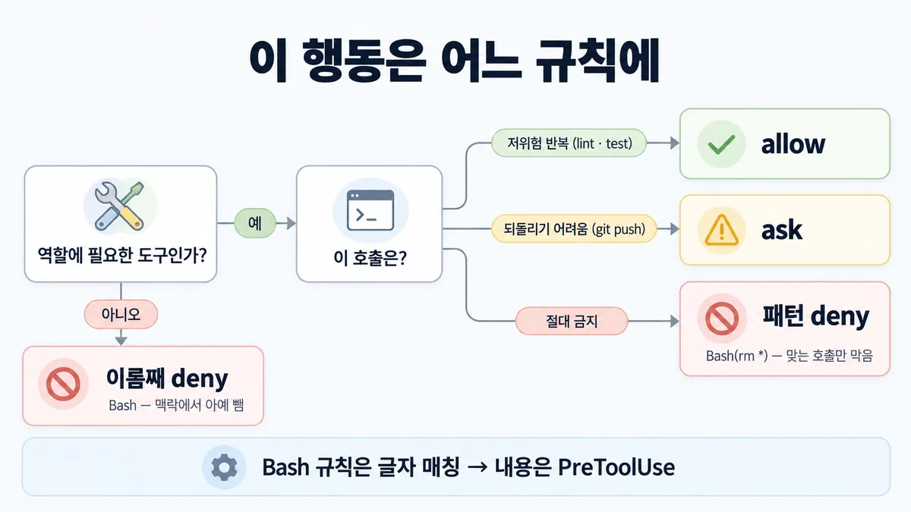
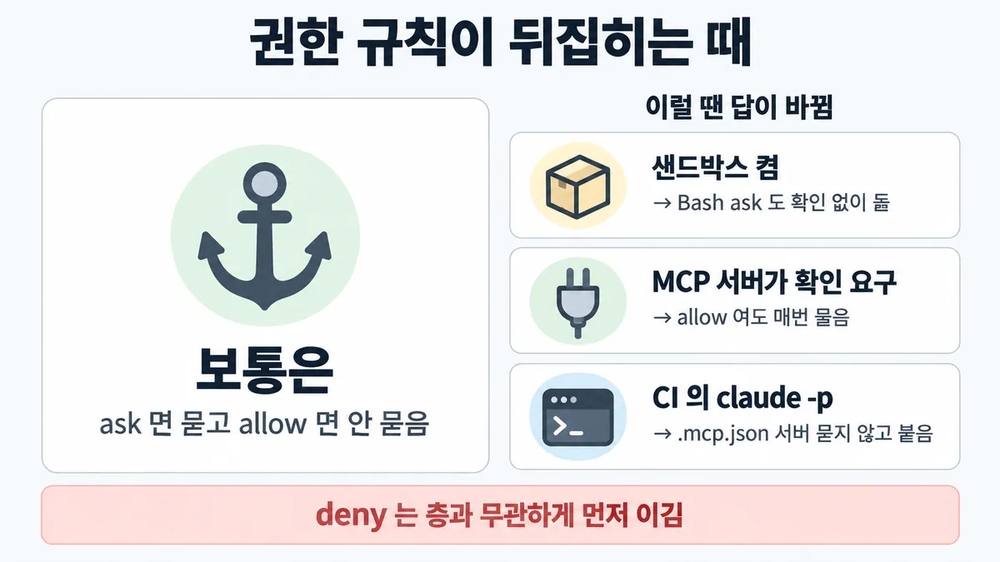

■ 에이전트 권한
표시가 없는 문장은 공식 문서에서 확인한 내용이에요. 다른 표시는 읽는 법
왜 배우나 — 시험이 요구하는 것
시험 목표 7.1 팀 도구·환경 설정 · D7 개발팀 7%Configure Claude tools and environments for teams (e.g., Claude Code)
이 개념으로 푸는 판단 (할 수 있어야 하는 것)
- 7.1③ 에이전트에 줄 권한, 어디까지? — 행동을 allow/ask/deny 로 나눈 공유 설정 + MCP 자격증명 최소 권한
- 7.1① 팀 규칙을 모두의 모든 세션에 똑같이 싣으려면? — 개인 설정 vs 저장소에 커밋한 프로젝트 설정 vs 조직 관리형 설정
- 7.1② '반드시' 돌아야 하는 검사, 어디에 거나? — 지시(CLAUDE.md) vs 훅, 그리고 어느 훅 이벤트
- 3.1① 상담원은 읽기·초안만 쓰는데 환불·삭제 도구가 붙어 있다 — 무엇을 바꾸나? — 과잉 권한 줄이기 (도구 제거 vs 로그·확인창 vs 모델 교체)
한눈에
Claude Code 가 도구 호출마다 규칙으로 허용(allow)·확인(ask)·거부(deny)를 정함. 규칙은 모델이 아니라 Claude Code 가 강제 — 프롬프트·CLAUDE.md 는 허용 범위를 못 바꿈
팀 규칙은 커밋한 .claude/settings.json 에, 팀 MCP 서버는 커밋한 .mcp.json 에
비유 IAM 정책의 명시적 Deny — 어느 정책에 Allow 가 있어도 Deny 하나가 이김


ELI5
건물 출입 규칙이에요. 경비는 목록을 정해진 순서로 봐요.
- 먼저 "출입 금지" 목록을 봐요. 있으면 끝, 못 들어가요.
- 다음 "물어보고 들여보내기" 목록을 봐요.
- 마지막에 "그냥 통과" 목록을 봐요.
- 규칙은 경비가 지키지, 방문객 말로 안 바뀌어요.
개념 설명
원리
누가 강제하나
- 권한 규칙은 Claude Code(클라이언트)가 도구 호출마다 검사 → 모델이 뭐라고 하든 결과가 같음.
- CLAUDE.md·프롬프트는 Claude 가 무엇을 시도할지만 바꿈. 무엇이 허용되는지는 못 바꿈.
순서가 결과를 정함
- deny → ask → allow, 첫 일치가 결정. 구체성은 순서를 못 바꿈 → 예외를 두려면 deny 를 좁히는 수밖에 없음.
- 층도 마찬가지 : 어느 층이든 deny 면 끝. 그래서 조직은 deny 만 내려도 아래가 못 풂.
- 능력을 주는 쪽(allow)은 신뢰가 필요하고, 제한하는 쪽(deny·ask)은 바로 먹음 — 남이 커밋한 파일이 내 기계에 권한을 여는 걸 막으려고.
deny 의 두 얼굴
- 도구 전체 deny(
Bash) = 도구 정의가 Claude 에게서 사라짐 → 부를 생각도 못 함. 필요 없는 도구 빼기(■ 최소 권한). - 패턴 deny(
Bash(rm *)) = 도구는 보이고, 맞는 호출만 막힘.
규칙의 한계
- Bash 규칙은 명령 글자를 봄 → 다른 표기(
git -C . push)는 빠져나감. - 그래서 층을 겹침 : 권한 규칙(글자) + PreToolUse 훅(내 로직) + 샌드박스(OS 수준, 인젝션이 판단을 뚫어도 남음).
MCP 는 "어디에 적었나"가 공유 범위
- local = 나·이 프로젝트(기본), project =
.mcp.json커밋 = 팀, user = 나·모든 프로젝트. - 비밀은 파일 밖(
${VAR}), 또는 개인 자격증명이면 local. - 커밋한 서버는 대화형에서 승인을 받고 켜짐 — 클론한 저장소가 스스로 켤 수 없음.
핵심 질문 두 개
- 이 도구가 역할에 필요한가? (아니면 빼기)
- 필요하면, 이 호출이 되돌리기 어려운가? (allow / ask / deny)
규칙과 판단


갈림길
②③ 이 행동, 어느 규칙 [7.1③]
도구 전체 deny
도구 이름만(Bash) = Claude 맥락에서 아예 뺌 (■ 최소 권한)
allow
묻지 않고
ask
매번 확인
패턴 deny
Bash(rm *) 처럼 — 도구는 남고 맞는 호출만 막음
①④⑤ 규칙이 부딪힐 때 [7.1③] [7.1①]
deny
deny → ask → allow 순, 첫 일치가 결정
deny
어느 층이든 deny 면 다른 층이 allow 못 함
ask
로컬 'don't ask again' allow 는 프로젝트·관리형 ask 를 못 이김
훅이 먼저
exit 2 훅은 allow 가 있어도 막음 · 훅의 allow 는 deny·ask 를 못 넘음
⑥ MCP 서버 어디에 [7.1③]
project (.mcp.json 커밋)
비밀은 파일에 말고 ${VAR}
local (기본값)
커밋하기 싫은 자격증명이 든 서버
user
~/.claude.json
흐름
그림 속 이름·금액·시간·토큰 수는 예시예요. 공식 한도·동작은 카드 본문 값이 기준.
장면 글로 보기
칸 : 호출 → deny → ask → allow
규칙 (deny) : deny → ask → allow 순, 첫 일치가 결정
규칙 (allow) : Bash(npm run *) · Bash(aws s3 ls)
질문 : 규칙 셋 중 무엇을 먼저 볼까?
① 저위험 반복 명령 ✓
- 시작 : 호출 — 쪽지 : Bash 명령 /
npm run lint - 검사 : 호출 → deny : 안 걸림 — 쪽지 :
Bash(aws *)/ → 불일치 - 검사 : 호출 → ask : 안 걸림 — 쪽지 :
Bash(git push *)/ → 불일치 - 통과 : 호출 → allow : 묻지 않고 — 쪽지 :
Bash(npm run *)/ → 일치 · 실행 - 끝 : allow = 묻지 않고 — 확인창 없이 lint 가 실행됨
② 좁은 allow 로 넓은 deny 뚫기 ≠
- 시작 : 호출 — 쪽지 : Bash 명령 /
aws s3 ls - 검사 : 호출 → deny : 넓은 deny 에 걸림 — 쪽지 :
Bash(aws *)/ → 일치 · 거부 - 건너뜀 : ask
- 건너뜀 : allow
- 끝 : 첫 일치가 deny — 좁은 allow(
Bash(aws s3 ls))도 넓은 deny 를 못 뚫음
③ 다른 표기로 빠져나감 ≠
- 시작 : 호출 — 쪽지 : Bash 명령 /
git -C . push - 시작 : deny — 쪽지 :
Bash(git push *)/ 를 deny 에 두면 - 검사 : 호출 → deny : deny 에 안 걸림 — 쪽지 :
git -C . push/ → 불일치 - 끝 : Bash 규칙은 명령 글자 매칭이라
git -C . push는 안 걸림 — 내용 검사는 PreToolUse 훅
나머지 규칙
-
모드 : [7.1③]
- 무인 실행(CI·예약 작업) =
dontAsk(미리 허용된 도구만, 나머지 자동 거부) bypassPermissions= 격리된 컨테이너·VM 에서만.auto= 분류기가 매 행동 검토, 고위험(high-stakes) 인프라의 꼼꼼한 사람 검토를 대신하지 않음
- 무인 실행(CI·예약 작업) =
규칙 원문 ①②③④⑤⑥ (갈림길로 그린 규칙)
-
세 규칙 : [7.1③]
- allow = 묻지 않고
- ask = 매번 확인
- deny = 못 씀. 평가 순서 deny → ask → allow, 첫 일치가 결정 — 더 구체적인 규칙이라고 순서가 바뀌지 않음. 좁은 allow(
Bash(aws s3 ls))도 넓은 deny(Bash(aws *))를 못 뚫음
-
위험도로 나눠 공유 설정에 : 저위험 반복(
Bash(npm run *)) = allow · 되돌리기 어려운 것(Bash(git push *)) = ask 또는 deny · 비밀 파일(Read(./.env)) = deny. 어느 명령을 ask/deny 에 둘지는 팀 판단 업계 일반 [7.1③] -
deny 두 종류 : [7.1③] [3.1①]
- 도구 이름만(
Bash) = 도구를 Claude 맥락에서 아예 뺌(못 봄) - 패턴(
Bash(rm *)) = 도구는 남고 맞는 호출만 막음 → 역할에 필요 없는 도구는 도구 전체 빼기 = ■ 최소 권한
- 도구 이름만(
-
층 합치기 : 어느 층이든 deny 면 다른 층이 allow 못 함(사용자 allow + 프로젝트 deny = 막힘, 반대도). 관리형 deny 는
--allowedTools로도 못 뚫음로컬 'don't ask again' allow 는 프로젝트·관리형 ask 를 못 이김 · 커밋한 allow 는 팀원이 그 폴더를 신뢰한 뒤에 적용, deny·ask 는 바로 적용 → ■ 팀 설정 위치
조직 잠금 :
allowManagedPermissionRulesOnly(관리형만 권한 규칙 출처) ·disableBypassPermissionsMode[7.1①] [7.1③] -
규칙의 한계 : [7.1②] [7.1③]
- Bash 규칙은 명령 글자 매칭 →
git -C . push는Bash(git push *)에 안 걸림. 명령 내용을 내 코드로 검사 = PreToolUse 훅 - 파일·네트워크를 OS 수준에서 = 샌드박스 → ◆ CLAUDE.md(지시) vs 훅(강제)
훅 vs 규칙 : 훅이 먼저 실행됨. exit 2 훅은 allow 가 있어도 막음 · 훅의 allow 는 deny·ask 를 못 넘음
- Bash 규칙은 명령 글자 매칭 →
-
MCP 범위 [7.1③]
범위 어디 누구 쓰는 곳 local (기본) ~/의 그 프로젝트 칸. claude. json 나만, 이 프로젝트 개인 개발 서버·실험·커밋하기 싫은 자격증명 project 저장소 루트 .mcp.json 커밋하면 팀 팀 공유 도구 user ~/. claude. json 나만, 모든 프로젝트 개인 유틸 같은 이름이 여러 범위면 local > project > user, 항목 통째(필드 안 섞음)
.mcp.json은${VAR}·${VAR:-기본값}확장(command·args·env·url·headers) → 파일은 공유, 토큰은 각자 환경project 서버는 대화형 세션에서 쓰기 전에 승인을 물음. 클론한 저장소가 스스로 승인 못 함(커밋한
enableAllProjectMcpServers는 미신뢰 폴더에서 무시).-p·SDK 세션은 묻지 않고 로드 → 막으려면disabledMcpjsonServersMCP 권한 규칙 :
mcp__github= 서버 전체 · allow 글롭은 서버 이름을 고정해야(mcp__github__get_*) · denymcp__*= 모든 MCP 도구 뺌. 조직 =managed-mcp.json·allowedMcpServers·deniedMcpServersMCP 토큰 범위 줄이기(OAuth scope 최소) → ■ MCP 인증·인가
더 깊이 : 판단 규칙 · 상황 변수 (설명)
판단 규칙
| 조건 | 답 | 근거 |
|---|---|---|
| 역할이 안 쓰는 도구 | 도구 전체 deny(또는 목록에서 뺌) | permissions "A bare tool name like Bash removes the tool from Claude’s context entirely" · 가이드 샘플 1 |
| 저위험 반복 명령 | allow | permissions (Bash(npm run *)) |
| 되돌리기 어려운 명령 | ask(매번 확인) 또는 deny | permissions (Bash(git push *)) |
| 넓은 deny 에 좁은 예외가 필요 | deny 를 좁힘 — allow 로는 못 뚫음 | permissions "An allow rule can’t carve an exception out of a deny rule." |
| 명령 내용·다른 표기까지 막아야 | PreToolUse 훅 · 샌드박스 | permissions |
| 팀 공유 MCP 서버 | .mcp. 커밋 + 비밀은 ${VAR} | mcp |
| 개인 자격증명이 든 MCP 서버 | local 범위 | mcp |
| 사람 없는 파이프라인 | dontAsk (미리 허용된 것만) | permissions · Skilljar 486932 |
| 확인창 전부 끄기 | bypassPermissions 는 격리 컨테이너·VM 에서만 | permissions |
상황 변수
| 변수 | 값 | 답 쪽 | 근거 |
|---|---|---|---|
| 도구 필요성 | 역할에 없음 | 도구 전체 deny | 판단 규칙 1 |
| 되돌림 | 쉬움·반복 | allow | 판단 규칙 2 |
| 되돌림 | 어려움 | ask / deny | 판단 규칙 3 |
| 규칙 출처 | 관리형 deny | 누구도 못 풂 (-- 포함) | permissions |
| 규칙 출처 | 커밋한 allow | 팀원 폴더 신뢰 뒤 | permissions |
| 규칙 출처 | 로컬 'don't ask again' | 프로젝트·관리형 ask 를 못 이김 | settings |
| 실행 방식 | 대화형 | project MCP 서버 승인 물음 | mcp |
| 실행 방식 | claude -p·SDK | project MCP 서버를 묻지 않고 로드 | mcp |
| 샌드박스 | 켬 + autoAllowBashIfSandboxed 기본 | Bash 전체 ask 를 샌드박스 경계가 대신함 | permissions |
| 모드 | auto | 분류기 검토 — 고위험(high-stakes) 인프라 사람 검토 대체 아님 | auto mode 글 |
연습 문제
팀 저장소 .claude/settings.json 의 deny 에 Bash(aws *)넓은 deny 가 있다. 한 개발자가 S3 목록만 보려고 같은 파일의 allow 에 Bash(aws s3 ls) 를 추가좁은 allow했다 — "더 구체적인 규칙이니 이긴다" 고 믿는다. Claude 가 aws s3 ls 를 부르면 어떻게 되나?
시험 대비
함정
- "권한은 두고 감사 로그로 추적" / "머지 전에 확인창 추가" → 보완 통제(control)일 뿐, 필요 없는 능력은 빼기 (공식 샘플 1 A·C) → ■ 최소 권한
- "좁은 allow 가 넓은 deny 보다 구체적이니 이긴다" → deny 먼저
- "CLAUDE.md 에 'git push 하지 마'" → 규칙은 Claude Code 가 강제. 프롬프트는 허용 범위를 못 바꿈
- "
Bash(git push *)deny 면 모든 push 가 막힘" →git -C . push는 안 걸림 → 훅·샌드박스 - "토큰을
.mcp.json에 적어 커밋" →${VAR}로 빼거나 local 범위 - "로컬에서 'don't ask again' 눌렀으니 팀 ask 가 사라진다" → 로컬 allow 는 ask 를 못 이김
- "CI 에선 사람 없으니
bypassPermissions" → 무인 =dontAsk, bypass 는 격리 환경에서만 - "클론한 저장소의
.mcp.json서버는 다 믿고 자동 연결" → 대화형은 승인 필요, 커밋한 자동 승인 키는 미신뢰 폴더에서 무시
신호
"Rules are evaluated in order: deny, then ask, then allow."
"An allow rule can’t carve an exception out of a deny rule."
"Permission rules are enforced by Claude Code, not by the model."
"If a tool is denied at any level, no other level can allow it."
"Check .mcp.json into version control so everyone on your team gets the same MCP tools and services."
"Use local scope for personal development servers, experimental configurations, or servers with credentials you don’t want in version control."
"Only use this mode in isolated environments like containers or VMs where Claude Code can’t cause damage." (bypassPermissions)
"Least privilege means removing capabilities the role does not require, eliminating the attack surface rather than monitoring or guarding it." (가이드 샘플 1)


더 깊이 : 뒤집히는 때 · 오답 재료 (설명)
뒤집히는 때
1. 샌드박스를 켜니 Bash 확인창이 사라지는 때
- 조건 : 팀 설정에
Bash전체 ask. 누군가 샌드박스를 켬(autoAllowBashIfSandboxed기본true). - 판단 : 샌드박스 안의 Bash 는 확인 없이 실행됨 — 샌드박스 경계가 "모든 Bash 확인"을 대신함. 그래도 내용 지정 ask(
Bash(git push *))·명시 deny·중요 경로rm은 그대로 걸림. "ask 에 넣었으니 늘 묻는다"가 뒤집힘. plan 모드에선 이 대체를 안 함. - 근거 : permissions
2. CI 에서 .mcp.json 서버가 묻지도 않고 붙는 때
- 조건 : 하루 300번 도는 CI 잡이
claude -p로 저장소를 엶. 저장소.mcp.json에 외부 서버. - 판단 : 대화형이면 승인을 묻지만
-p·SDK 는 물을 수 없어 그냥 로드. 막으려면disabledMcpjsonServers·--setting-sources(SDKsettingSources)로 프로젝트 설정 빼기 ·--strict-mcp-config. - 근거 : mcp
3. allow 해 뒀는데 계속 묻는 때 (MCP)
- 조건 : 팀이
mcp__crm__grant_access를 allow. 서버가 이 도구에_meta["anthropic/requiresUserInteraction"]: true를 붙임. 또는 조직이 claude.ai connector 도구를 ask 로 정함. - 판단 : 둘 다 allow 규칙·훅 allow 를 무시하고 매번 물음(
bypassPermissions에서도).dontAsk면 아예 거부. "allow = 안 묻는다"의 예외. - 근거 : mcp · permissions
4. auto 모드로 바꾸니 넓은 allow 가 빠지는 때
- 조건 : 수동 모드에서 편하려고
Bash(python *)같은 넓은 인터프리터 allow 를 둠.auto로 전환. - 판단 : auto 진입 시 임의 코드 실행을 여는 넓은 규칙(쉘 전체·인터프리터 와일드카드·패키지 매니저 run)은 버리고 분류기에 보냄. 좁은 규칙만 이어짐.
- 등급 : (Anthropic 엔지니어링 글 — 제품 문서 아님, "best-effort")
- 근거 : auto mode 글
5. 사용자 deny 가 팀 allow 를 막는 때
- 조건 : 팀
.claude/settings.json이Bash(docker *)allow, 한 팀원의~/.claude/settings.json에Bash(docker *)deny. - 판단 : 사용자 층은 우선순위가 가장 낮지만 권한에선 deny 가 층과 무관하게 먼저 → 그 팀원에겐 막힘. 값 하나짜리 키(model 등)의 "높은 층이 이긴다"(■ 팀 설정 위치)와 다름.
- 근거 : permissions
오답 재료
| 오답 | 왜 끌리나 | 왜 틀리나 | 근거 |
|---|---|---|---|
| "관리자 토큰은 두고 감사 로그로 추적" | 기능을 안 깨고 안전해 보임 | 사후 감지일 뿐. 필요 없는 능력은 빼기 | 가이드 샘플 1 해설 · ■ 최소 권한 |
| "머지 전에 확인창 추가" | 사람이 한 번 봄 | 보완 통제(control)일 뿐, 능력은 남음 | 가이드 샘플 1 해설 |
| "좁은 allow 가 더 구체적이니 넓은 deny 를 이김" | 방화벽 규칙처럼 구체 규칙 우선 같음 | deny → ask → allow, 구체성 무관 | permissions |
| "CLAUDE.md 에 'push 금지' 적으면 된다" | 쉽고 모두에게 실림 | 규칙은 Claude Code 가 강제, 프롬프트는 허용 범위를 못 바꿈 | permissions |
"Bash(git push *) deny 로 push 는 다 막힘" | 규칙이 명확해 보임 | git -C . push 는 안 걸림 | permissions |
"토큰을 .mcp. 에 적어 커밋" | 팀원이 바로 씀 | 비밀이 저장소에 남음. ${VAR} 또는 local | mcp |
"CI 는 사람이 없으니 bypassPermissions" | 확인창에 안 멈춤 | 무인 = dontAsk. bypass 는 격리 환경에서만 | permissions · Skilljar 486932 |
"커밋한 enableAllProjectMcpServers 로 팀 서버 자동 연결" | 한 번에 다 켜짐 | 미신뢰 폴더에선 무시, 서버는 승인 대기 | mcp |
참고
CCA-F
겹침 (2.4 MCP 스코프 local·project·user · ${VAR} 로 토큰 분리 · 2.3 서브에이전트마다 역할에 필요한 도구만) — 여기선 allow/ask/deny 를 위험도로 나눠 팀 공유 설정에 싣는 판단과, 규칙이 어느 순서·어느 층에서 이기는지로 묻는다
출처
- 가이드 목표 7.1 공식 시험 가이드 v1.0
- 샘플 1 공식 시험 가이드 v1.0
- code.claude.com permissions
- settings
- mcp (2026-09-28 조회)
- auto mode 글
- Skilljar Claude Code in Action 486932
- CCA-F 노트 2.3·2.4 (개인 학습 노트)
상태
- 업계 일반 1줄(② 배치)
미해결
- 목록 7.1③ "리뷰 서브에이전트 = PR 코멘트만, 머지 불가" — 공식 원문에서 못 찾음(파일 en-claude-code-mcp.md·en-claude-code-permissions.md, 검색어 review·pull request·merge). 원리는 ■ 최소 권한이 덮으니 카드엔 예로 안 넣음.
- 목록 "rm -rf·force push = deny, git push = ask" 배치 — 공식 예는
Bash(git push *)를 deny 로도(permissions) ask 로도 씀. 어느 쪽에 둘지는 팀 판단(업계 일반). - 서브에이전트 파일 안에 MCP 서버를 좁혀 거는 법(sub-agents 문서 "Scope MCP servers to a subagent")은 받지 않음 — mcp에 링크만.
- 관리형 MCP(
managed-mcp.json·allowedMcpServers·deniedMcpServers) 세부는 managed-mcp 문서 소관 — 이번엔 이름만 확인(mcp).